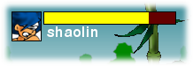

Introducción
Este documento describe varias caracterísicas de diseño en el videojuego Shaolin's Blind Fury. El motivo de este texto es alentar a nuevos desarrolladores a investigar el código del programa, adaptarlo a sus necesidades y/o mejorarlo.
Puede obtener mas información sobre este programa visitando el sitio web del proyecto LosersJuegos.
Temática del juego
En el juego Shaolin's Blind Fury optamos por crear un juego de peleas callejeras clásico como Captain Commando, Final Fight o Cadillacs and Dinosaurs. En esta clase de juegos, el usuario controla a un personaje que debe luchar contra numerosos enemigos a puño limpio (o puño sucio, como prefiera...).
Historia
Un estudiante de artes marciales ciego es víctima de un robo insólito, unos ninjas malvados ingresan en su templo y le roban sus 'ojos' ficticios de vidrio, los cuales tienen el fantástico poder de invocar seres super-poderosos de mundos paralelos.
Nuestro protagonista sabe que dichos ojos esconden un terrible peligro si caen en manos equivocadas. Por ese motivo, el protagonista del juego debe salir a las calles en busca de su ojitos de cristal, pese a toda adversidad.
Estados
Resumen
Cada personaje puede realizar diferentes acciones: correr, saltar, caminar. Cada una de estas acciones recibe el nombre de estado.
En este videojuego se necesita implementar una gran cantidad de estados por personaje. Por lo tanto se ha optado implementar la gestión de estados mediante el patrón de diseño "State Pattern". Este patrón consiste en representar el comportamiento de cada estado mediante un objeto diferente, de forma tal que la transición entre un estado y otro sea dinámica y sencilla.
Por ejemplo, el personaje principal del juego, Player, contiene una variable llamada 'state' que indica el estado actual del personaje. Cuando se tiene que altualizar el personaje, el mismo objeto se encarga de utilizar el objeto indicado por la variable state.
#Personaje
def update(...):
self.state.update()
De esta forma, cambiando el objeto referenciado por el atributo state, el personaje se comportará de forma diferente.
Objeto State
Un estado se debe construir a partir de la clase State:
#State
def __init__(self, player):
...
def update(self):
...
y debe re-definir el método update, desde donde tendrá acceso al personaje del juego desde el atributo player.

Cambios de estado
Si se quiere implementar un cambio de estado en el personaje debe llamar al método change_state de la clase Player y enviarle como parámetro una instancia del nuevo estado.
Por ejemplo, si queremos que el estado Parado le permita al usuario transitar al estado saltar o caminar mediante las teclas up, left o right:
#Parado
def __init__(self, player):
State.__init__(self, player)
def update(self):
if self.player.control.up:
self.player.change_state(Saltar(self.player))
if self.player.control.left or self.player.control.right:
self.player.change_state(Caminar(self.player))
recordar que cada instancia de estado necesita una referencia al personaje que debe manipular. Esto posibilita que cada método `update` tenga la posibilidad de ordenar cambios de estado y manipular cualquier otra cosa relacionada con el personaje.
Audio
Resumen
El módulo common contiene una referencia al objeto Audio, este objeto almacena todos los sonidos del juego, por lo tanto, si se quiere reproducir un sonido basta con escribir:
from common import audio
audio.play('punch1')
en general, `audio.play(nombre_sonido)` debería funcionar desde cualquier
parte del programa...
Colisiones
Resumen
Las colisiones permiten crear reacciones a los golpes y movimientos de todos los personajes del juego. Esta sección explica como funcionan las colisiones con objetos, enemigos y el protagonista.
Atributos que intervienen
Las colisiones se verifican en base a rectángulos internos a cada instancia de objeto. La siguiente imágen muestra el nombre y representación visual de cada uno de estos rectángulos:
Métodos
En la clase 'Player' existen varios métodos que realizan cálculos para determinar colisiones:
- get_collision_receive() - informa si el personaje 'recibe' un golpe de otro personaje en la lista `enemies` de su propia instancia.
- get_collision_send() - informa 'True' si el personaje está golpeando en ese instante a otro. Esto es útil cuando el personaje quiea incrementar su puntaje con cada golpe o mostrar una animación diferente cuando concreta un golpe.
- set_collision() - se debe llamar para generar una rectángulo emisor de colisión. Por ejemplo, al momento de recibir el evento de la tecla 'golpear'.
- unset_collision() - realiza el trabajo inverso al método `set_collision`, es decir, elimina el rectángulo que emite colisión.
A su vez, los objetos de la clase Enemy, tienen métodos similares para determinar si el jugador los está golpeando:
- get_collision_receive() - determina si el protagonista lo está golpeando. También existe una variable sensitive que indica si el enemigo puede recibir golpes en ese momento.
¿Quien verifica colisiones?
Toda colisión se produce entre dos sprites, pero quién determina el primer contacto es el objeto receptor. Por ejemplo, el personaje del juego consulta en todo momento si alguien lo está golpeando. De igual forma los objetos del nivel (cajas, barriles ...) verifican constantemente cualquier tipo de colisión con ellos.
Controles
Resumen
Para facilitar el acceso a cada una de las teclas de control, se ha creado la clase "Control". Así, cada personaje que se puede manipular desde el teclado delega la tarea de consultar los eventos del teclado a otro objeto.
La ventaja de esta aproximación está permitir a los usuarios re-definir la función de cada tecla y ofreces teclas alternativas dentro del juego. Además se puede simplificar mucho el código, ya que cada personaje que se pueda manejar solo accede a aquellas teclas que se pueden utilizar y no al mapa de teclado completo.
Al momento de crear un personaje manejable se le debe enviar una instancia de la clase Control. Desde ahí, cada personaje consultara a su propia instancia control para tomar decisiones.
Control actualiza 8 variables booleanas que indican eventos de control:
- up
- down
- left
- right
- jump
- attack
- run
- special
Veamos un ejemplo, para consultar el estado de los controles se puede realizar lo siguiente:
# Personaje
def update(self):
if self.control.up:
print "El personaje está subiendo"
if self.control.attack:
print "El personaje ataca"
de estas variables las primeras 6 están asociadas directamente a la pulsación de alguna tecla. Dicha relación se puede alterar desde el archivo `config.ini`.
En cambio, las variables `run` y `special` son combinaciones de teclas habituales en esta clase de juegos. Por ejemplo:
- run vale True cuando el control detecta que se ha realizado la combinación de teclas "izquierda, izquierda (dejando pulsado la segunda vez)" o "derecha, derecha (dejando pulsado la segunda vez)". Esta combinación es clásica en juegos como "Captain comando" o "The king of fighters".
- special es similar, solo que la combinación es "abajo, arriba, golpe". Aporta diversión a los jugadores que ya conocen el juego, porque les permite hacer mucho daño a sus oponentes y es algo complicado de lograr.
Debug
Resumen
En el módulo common existen varias constantes que se pueden habilitar para observar en pantalla posibles errores:
- VISIBLE_DEBUG : muestra información geométrica de colisiones o límites, es útil para corroborar que esta información (invisible) corresponde con los gráficos del juego.
- DEBUG : imprime por el terminal distintas verificaciones o pruebas
básicas. Toda prueba, aunque sea temporal, se debería poder desactivar
mediante esta variable.
Veamos un ejemplo donde se utiliza esta constante:
if common.DEBUG: print "alguna prueba..."
Opciones
Resumen
Los parámetros de configuración se encuentran en la clase Options. Una instancia única de esta clase se puede encontrar dentro del módulo common.
Tomas
Resumen
El protagonista del juego puede sujetar a otros personajes. De manera similar a como ocurre en otros videojuegos del género, nuestro personaje puede golpear al enemigo sujetado o bien arrojarlo hacia uno de los laterales.
Para sujetar a un enemigo el protagonista debe estar caminando hacia 'arriba' o 'abajo'. Y además tiene que estar muy cerca de su oponente.
Estos son los mensajes que intercambian los personajes para operar:
player.check_collision_to_take(): # verifica cualquier colision con enemigos.
enemy.can_take() # si existe una colision con alguno, le pregunta
# si se puede sujetar.
player.change_state(TakeEnemy(enemy)) # cambia de estado y muestra la nueva animación.
enemy.take() # sujeta al enemigo.
enemy.leave() # suelta al enemigo.
Escenarios
Resumen
Los escenarios del juego son diferentes en cada etapa, cada uno puede estar compuesto de diferentes capas que simulan profundidad o lejanía.
Capas
Las capas son imagenes separadas que simulan profundiada en el escenario. Cada capa se desplaza en pantalla a diferentes velocidades.
Tamaños de capas
| Nombre | Tamaño |
| layer 1 | X |
| layer 2 | (X + 640) / 1.5 |
| layer 3 | (X + 640) / 2 |
Colisiones con objectos
Indicadores de energía
Resumen
Cada personaje del juego tiene un grado de energía, que representa la vitalidad del mismo. A medida que el personaje recibe golpes este indicador de energía disminuye. Cuando el indicador llega a 0, el personaje muere.
Vista y modelo
Existen dos clases que actuan en conjunto para representar la enegía de un personaje.
Vista
La clase EnergyView se encarga de representar la energía en la pantalla del juego, de forma que el jugador pueda conocer la energía de un enemigo o protagonista. Se puede observar en la misma un indicador, el nombre del personaje y una pequeña minuatura de su rostro:

Modelo
Pero en el juego puede existir muchos personajes al mismo tiempo en pantalla, y no se muestra un indicador EnergyView por cada uno. En su lugar, cada personaje tiene modelo de energía: una clase que representa los datos a mostrar, pero que es invisible. Básicamente el procedimiento dentro del juego permite que el usuario solo vea los modelos de energía atraves del componente EnergyView.